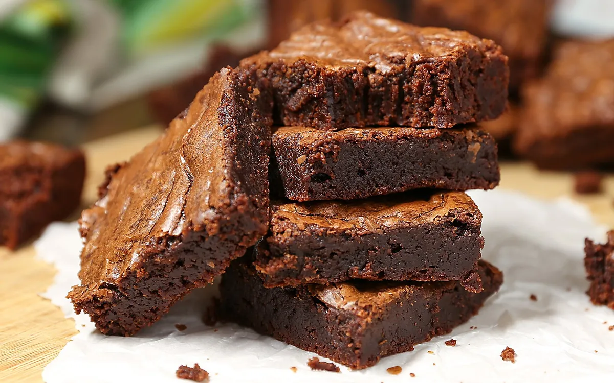

Scrumptious Frosted Fudgy Brownies
MMMMMMM, I can never eat just one of these melt-in-your-mouth brownies, they are so rich and chocolaty.

Ingredients
- 8 (1 ounce) squares unsweetened baking chocolate
- 1 cup butter
- 5 eggs
- 3 cups white sugar
- 1 tablespoon vanilla extract
- 1½ cups all-purpose flour
- 2 cups chopped walnuts
- 1¼ cups white sugar
- 1 cup heavy cream
- 5 (1 ounce) squares unsweetened baking chocolate
- ½ cup butter, softened
- 1 teaspoon vanilla extract
Steps
- Preheat oven to 375 degrees F (190 degrees C). Grease a 13x9-inch baking pan. Place 8 ounces of baking chocolate with 1 cup of butter in a microwave-safe bowl, and microwave on High until the chocolate is soft and the butter has melted, about 2 minutes. Stir to mix.
- Place the eggs, 3 cups of sugar, and 1 tablespoon of vanilla extract in a large bowl, and beat with an electric mixer on high speed for 2 minutes. Reduce the mixer speed to low, and beat in the melted butter-chocolate mixture. Beat in the flour until just combined (do not overmix), and stir in the chopped walnuts. Spread the batter in the prepared pan.
- Bake in the preheated oven until a toothpick inserted into the center comes out with fudgy crumbs, about 35 minutes. Cool in the pan before frosting.
- To make frosting, combine 1 1/4 cup of sugar with the heavy cream in a saucepan over medium heat, and stir until the sugar dissolves and the mixture begins to simmer, about 3 minutes. Reduce the heat to low, and let the mixture simmer for 7 minutes without stirring.
- Remove the cream mixture from the heat, and stir in 5 ounces of baking chocolate and 1/2 cup butter, stirring to melt and blend the chocolate. Add 1 teaspoon vanilla extract; whisk until smooth. Place the frosting in the refrigerator and stir every few minutes until the frosting is chilled and thick, about 30 minutes. Frost the cooled brownies, and cut into squares.
Cook's Note
If using a glass dish, preheat to 350 degrees F (175 degrees C). You can substitute macadamia nuts for the walnuts, if you like.
Nutrition Facts
Per Serving: 344 calories; protein 4.4g; carbohydrates 35.8g; fat 22.9g; cholesterol 62.1mg; sodium 78.1mg. Full Nutrition